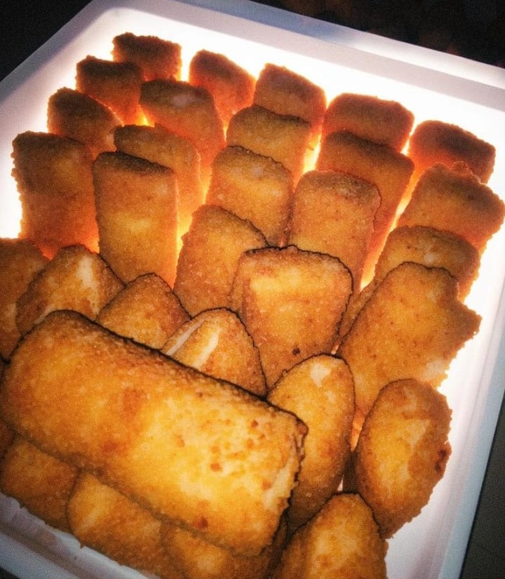

Tentang Zayid Food
Zayid Food (Risoles Frozen & Matang) adalah usaha rumahan yang menjual risol frozen dan matang premium yang berlokasi di Kota Palu, terkhusus untuk risol matang hanya tersedia jika ada pesanan / acara. Kami menggunakan bahan-bahan berkualitas untuk memberikan pengalaman ngemil yang tak terlupakan bagi masyarakat Palu. Usaha ini sudah berdiri sejak 2020 dan sudah memiliki NIB dan Sertifikat Halal.
Kontak: 0812-3456-7890
Alamat: Jl. Palu Raya, Kota Palu